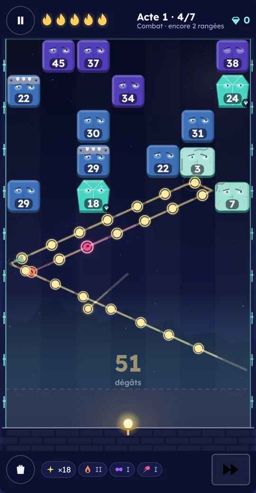
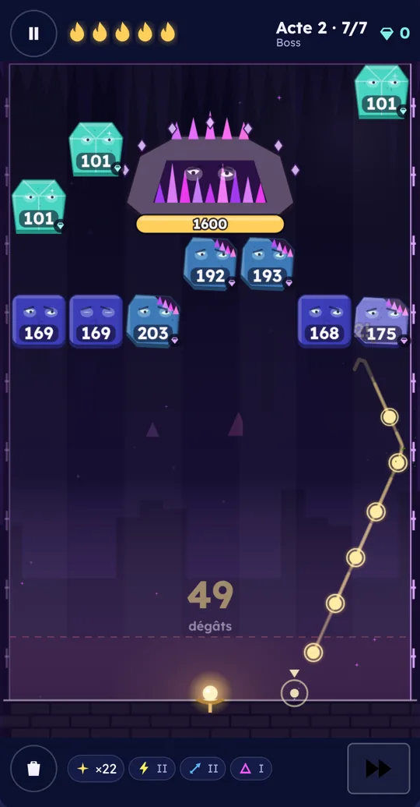
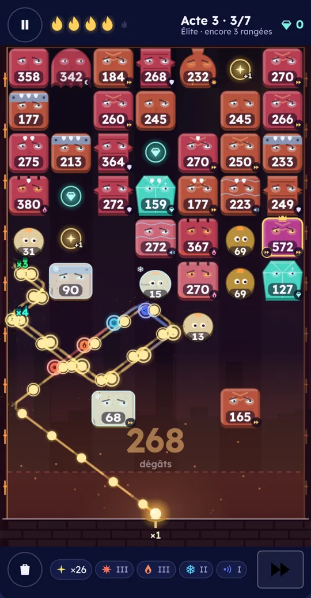
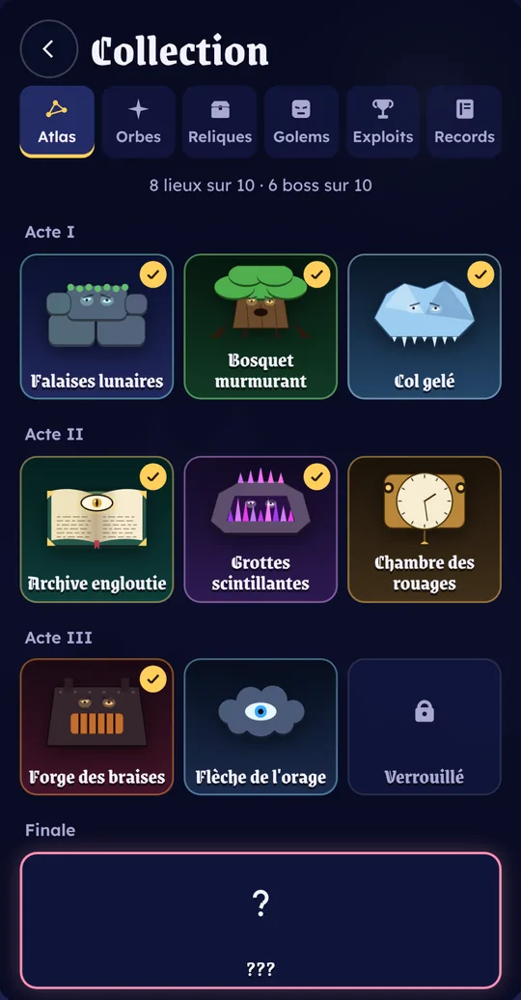
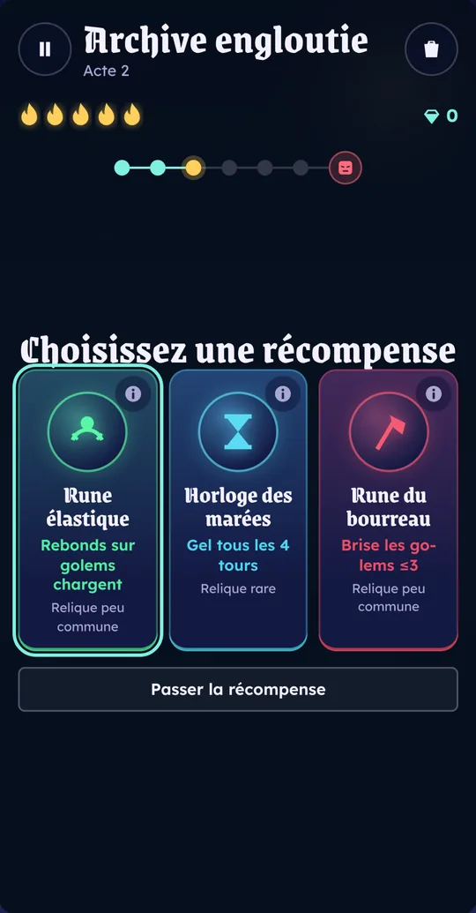

Caromancer
Chaque rebond renforce votre sort.
Un roguelite au tour par tour qui se joue d'un seul pouce. Faites glisser pour viser, relâchez, et regardez vos orbes ricocher à travers une marée de golems de pierre runique.

Comment se joue un tour
Visez
Faites glisser n'importe où sur le plateau. La ligne de visée montre où tombent vos premiers rebonds.
Jouez la bande
Chaque rebond sur un mur ou le plafond ajoute une bande : +50 % de dégâts pour cet orbe.
Brisez
Les golems descendent après chaque salve. Nettoyez l'étage avant qu'ils n'atteignent votre lanterne.
Dix lieux, dix boss
Chaque partie traverse trois actes tirés de dix lieux qui s'ouvrent quand vous battez leurs gardiens. Chaque lieu a ses golems et son boss : une Reine Géode dont la coque repousse, un Horloger qui rembobine les dégâts, une Étoile Creuse qui avale votre ligne de visée.




Des combinaisons qui dérapent
Choisissez parmi 14 orbes et 42 reliques entre les combats. Jumeaux qui se divisent, Volts en chaîne, Novas explosives, Comètes déjà chargées : empilez-les jusqu'à ce qu'une seule salve inflige des milliers de dégâts.
Équitable par principe
- Pas d'énergie, pas de minuteurs, pas de coffres à butin.
- Une pub ne se lance que si vous la choisissez : pour rallumer une partie ou doubler votre lumière stellaire.
- Tout ce qui change le jeu se gagne en jouant.
- Fonctionne entièrement hors ligne. Sans compte.
De quoi revenir longtemps
Six héros, dix niveaux d'Éclipse, la Faille du jour, le Défi de la semaine, l'Enchaînement de boss, six Épreuves, un mode Sans fin, 39 exploits, des objectifs de maîtrise par héros, des codes de graine à partager et 13 styles d'orbe. En English, Español, Português, Français, Deutsch et 日本語.